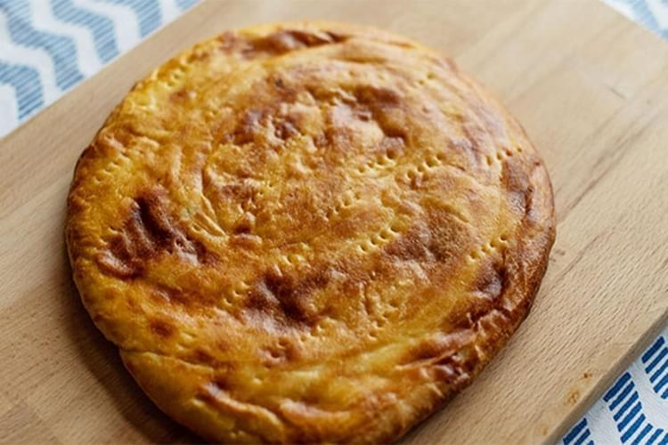
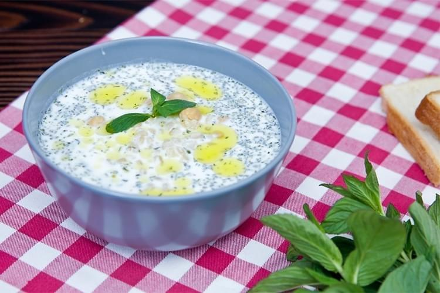
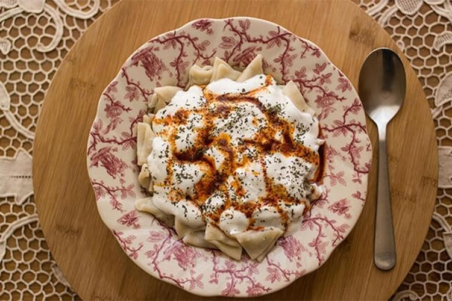
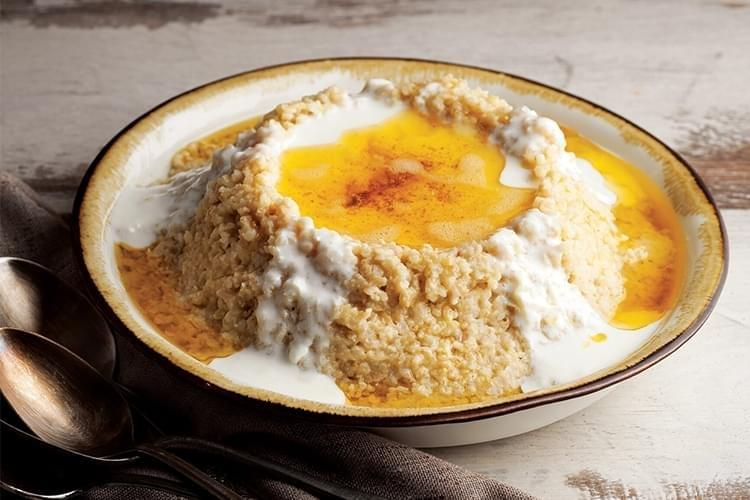
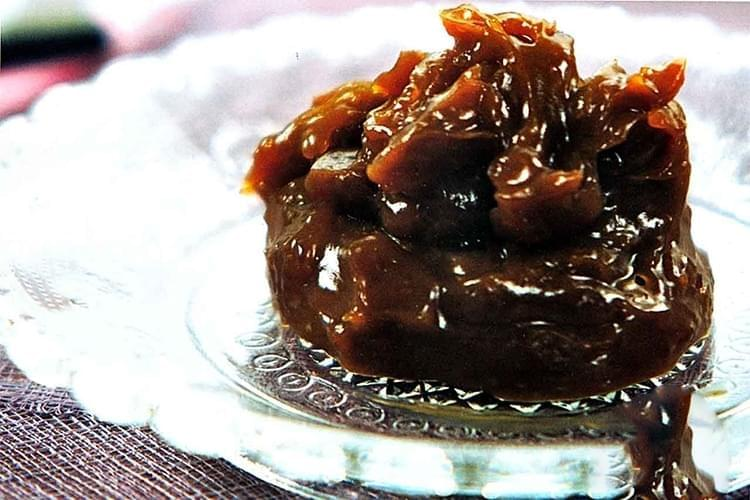

1-Kete

Bölgeye has olan hamur içerisinde yine bölgeye özgü olan çiriş otunun eklenmesiyle yapılmaktadır. Hamur, buğday unu kullanılarak hazırlanmaktadır.
Çiriş otu da eklendikten sonra sac üzerinde pişirilerek servise hazır hale getirilmektedir. Lezzetine lezzet katmak amacıyla isteğe gire iç kısmına tereyağı eklenmektedir.
2-Alabalık
 Şehirde kırmızı et gibi alabalık da yoğun olarak tüketilmektedir. Alabalıklar genellikle Balık Gölü üzerindeki tesislerde yetiştirilmektedir. Meşhur bir yemek olmasının dışında ortopedik hastalıkların tedavisi amacıyla da kullanılmaktadır.
Bölgede alabalık tesisleri genellikle yüksek rakımlı yerlerde bulunmaktadır. Bunun sonucunda da alabalıklar daha lezzetlidir.
Şehirde kırmızı et gibi alabalık da yoğun olarak tüketilmektedir. Alabalıklar genellikle Balık Gölü üzerindeki tesislerde yetiştirilmektedir. Meşhur bir yemek olmasının dışında ortopedik hastalıkların tedavisi amacıyla da kullanılmaktadır.
Bölgede alabalık tesisleri genellikle yüksek rakımlı yerlerde bulunmaktadır. Bunun sonucunda da alabalıklar daha lezzetlidir.
3-Ayran Aşı
 Ağrı’nın bir diğer meşhur yemeği de ayran kullanılarak hazırlanan bu lezzettir. Yemeğin içerisinde buğday ve nane bulunmaktadır. Servis sırasında baharat isteğe göre ilave edilmektedir.
4-Hengel
 Ağrı’nın en çok sevilen hamur yemeği olarak kabul edilen hengel, mantıya benzemektedir. Yufkaların inceltilerek kare şeklinde kesilmesiyle hazırlanmaktadır. Bu küçük parçalar haşlandıktan sonra üzerine yoğurt veya hengel sosu dökülmektedir. Bu, Ağrı’nın yöresel sosudur. Yemeğin lezzeti de sıcak olduğunda ortaya çıkmaktadır. Soğumadan tüketilmesi tavsiye edilmektedir.
5-Haşıl

Ağrı’nın bir diğer yöresel lezzeti olan haşıl tereyağı kullanılarak yapılmaktadır. Çaşır otu ve buğday kullanılarak hazırlanan yemeğin servisinde tereyağı yerine alternatif olarak pekmez de tercih edilmektedir.
6-Hasude
 Ağrı’nın meşhur tatlı yemeğidir. Özel olarak hazırlanmış olan şerbetin üzerine un eklenerek belli bir kıvama gelinceye kadar çırpılmaktadır. Daha sonra tava üzerinde ısıtılmaktadır.